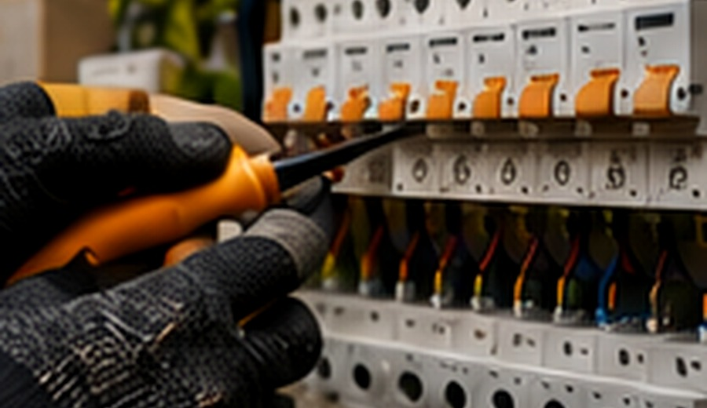

Expertise
Des conseils adaptés.
Basé à Pont-Aven, ARMOR accompagne les particuliers et professionnels du Finistère Sud avec sérieux, réactivité et travail soigné.
Chaque projet est étudié selon vos besoins : installation, rénovation, extension, automatisme, sécurité, dépannage et confort au quotidien.

Des conseils adaptés.
Intervention Pont-Aven et alentours.